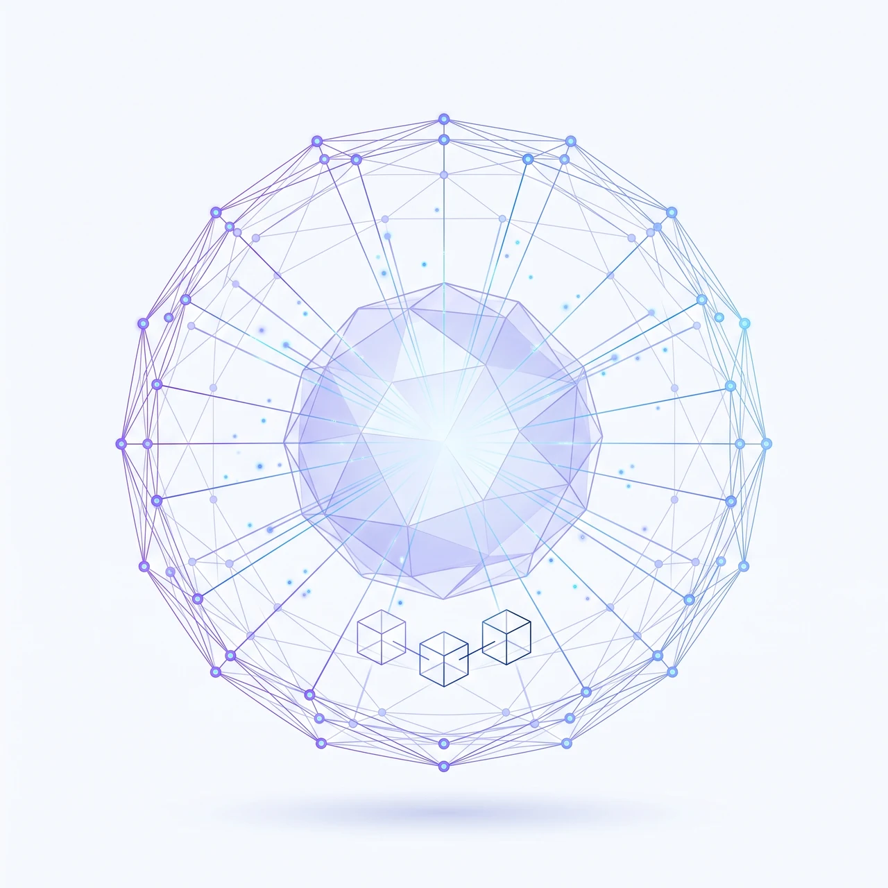

K8X
Задача
Запустить маркетинг с нуля для международного майнинг-пула: поддержка B2B-продаж, приток пользователей, доверие к бренду и основателям
Результат
- Регистрации +20–40% каждый месяц, март–сентябрь 2026
- Топ-15 мировых майнинг-пулов по данным MiningPoolStats
- Сообщество 2000+, активный чат 750+
Что сделала и деталиСвернуть: кейс K8X
Что сделала
- Разработала стратегию, позиционирование, CJM и аналитику
- Собрала команду и подрядчиков: редакция и SMM, реклама, PR и SERM, видеопродакшн
- Запустила Telegram-канал и сообщество
- Вывела компанию в медиа: 30+ экспертных публикаций в месяц (vc.ru, РБК), PR руководителей в «Известиях», TechInsider, «Генеральном директоре», BeInCrypto
- Подготовила презентации для B2B-продаж, архитектуру нового сайта, коллаборации с партнёрами и блогерами
Эффект
- Новый продукт исследован, упакован и готов к запуску
- Часть рутины автоматизирована с ИИ: ресёрч, SEO-контент-завод, постановка и управление задачами